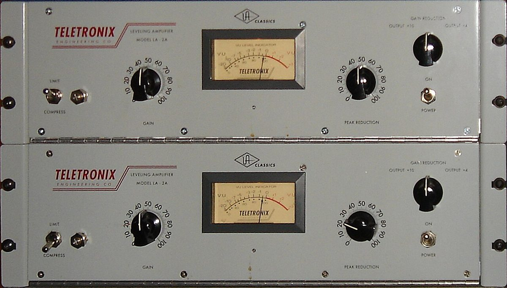
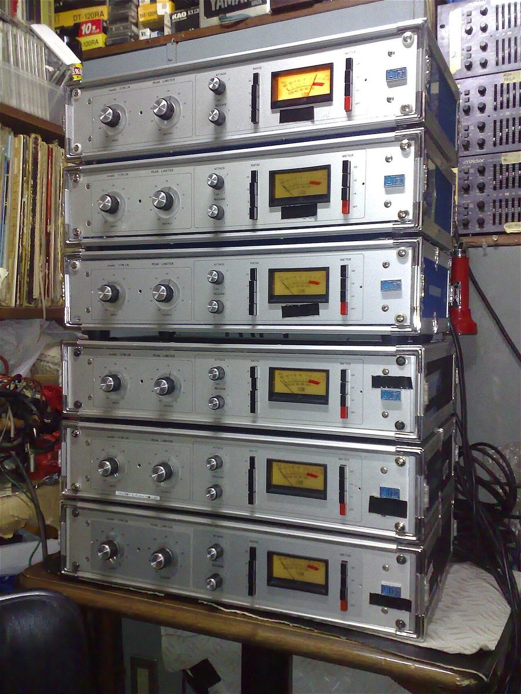
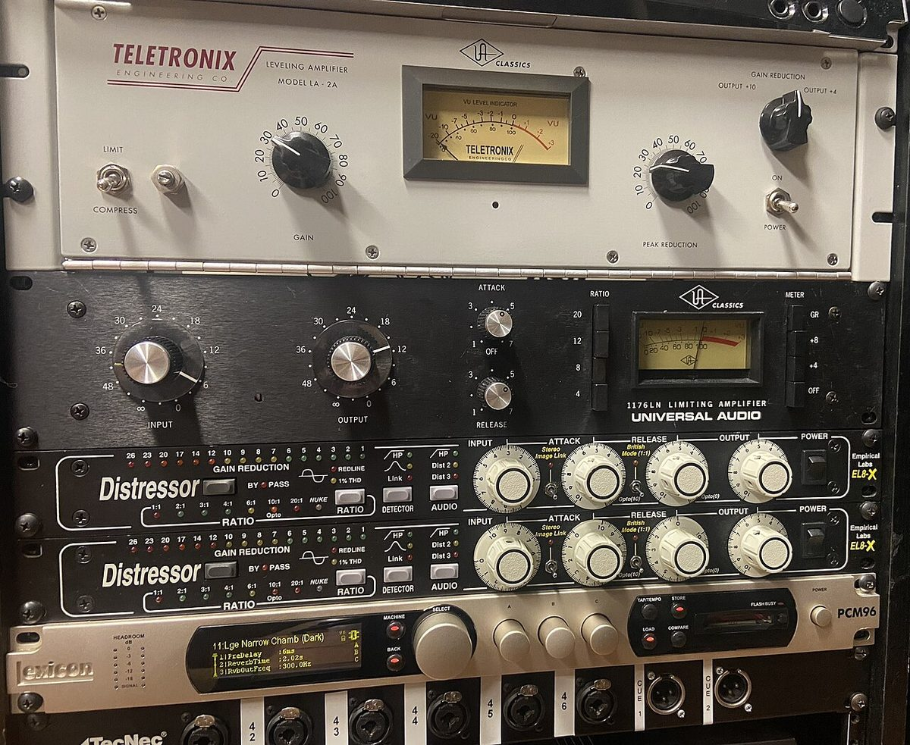

5. Audio Compression: Taming Dynamics
Transfer Curve & Timeline · VCA / FET / Opto · Level-Match1. The six controls & hardware behavior
Threshold
Level where compression begins. Everything below passes unchanged; lowering threshold grabs more signal.
Ratio
Attenuation slope above threshold. At 4:1, 8 dB over threshold comes out 2 dB over.
Knee
Hard knee clamps right at threshold; soft knee eases in smoothly around it.
Attack
Reaction speed after crossing threshold. 20–40 ms lets drum transients snap through before clamping.
Release
Recovery time after dropping below threshold. Too fast pumps; too slow dulls the next beat.
Makeup gain
Restores average volume after peak reduction so you can judge true tone at equal loudness.
More controls on studio compressors
Input & output (fixed threshold)
Units like the 1176 and LA-2A fix their internal threshold—turning up Input pushes audio harder into gain reduction.
Sidechain filter (SC HPF)
High-passes what the detector listens to so kick drums do not pump the entire mix bus.
Mix (wet/dry)
Blends compressed sustain under dry punch inside one box (see Parallel Compression below).
Peak vs. RMS detection
Peak catches fast drum spikes; RMS tracks average loudness smoothly like human hearing.
Stereo link
Links L/R gain reduction together so a loud snare fill never tilts the stereo center.
Gain-reduction meter
Watch the GR needle on every phrase: 3–6 dB on vocals or buses goes a long way.
2. Engineer challenges
A. Even out the singer
Make quiet and belted vocal phrases sit together: output range ≤ 10 dB, peak GR ≤ 15 dB, and output peak between −6 and 0 dBFS.
B. Keep the drum punch
Control the kit with 3–10 dB peak GR while keeping stick transients crisp: attack ≥ 20 ms and no clipping.
C. Build a brickwall limiter
A limiter catches hot peaks: ratio 20:1, knee ≤ 3 dB, attack ≤ 1 ms, threshold ≥ −12 dB, active limiting (≥ 1 dB GR), and output peak ≤ −1 dBFS.
3. Do the math
Above threshold, only a fraction of the overshoot escapes:
output = threshold + (input − threshold) ÷ ratio
4. Level matching: EQs and compressors
Louder always tricks the ear into sounding "better." Whether dialing in EQ Output Trim or compressor Makeup Gain, always level-match processed and bypassed loudness before deciding if compression genuinely helped. Click Auto Level-Match in the workbench above to hear an honest Bypass A/B.
5. Serial vs. parallel (New York) compression
Serial routes output into the next processor (e.g., high-pass EQ → compressor so sub-bass doesn't pump). Parallel blends a crushed copy underneath the dry drum track so transients stay explosive while quiet room sustain rises. Audition it live below:
6. Meet the hardware
Every knob in the lab comes from classic hardware units. Click any photograph to enlarge it.


